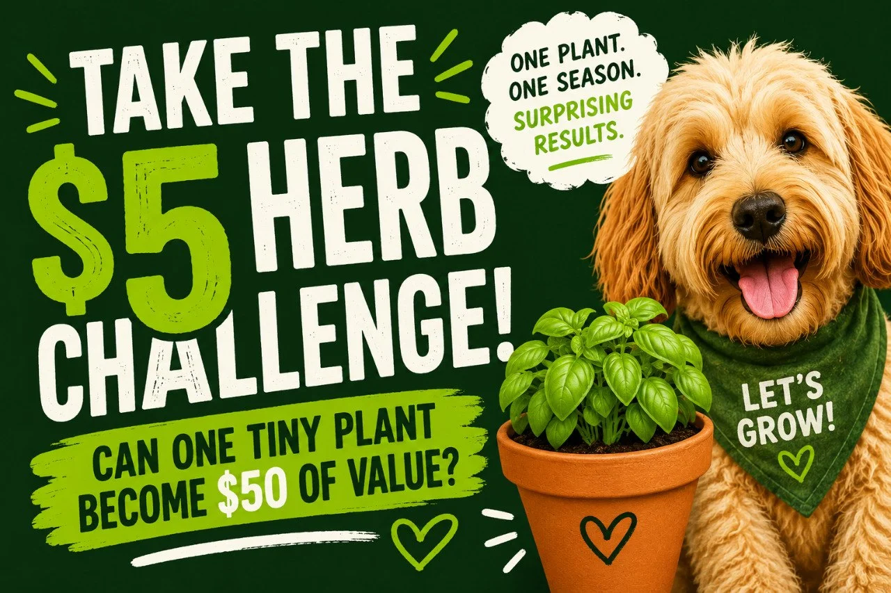

Take the $5 Herb Challenge
Can one tiny herb plant create $50 of backyard value?
Starting investment: $13
Current value: $0
Goal: $50

Existing QBL illustrationCurrent challenge standings
- Mint — 16× return
- Basil — 15× return
- Oregano — 10× return
- Thyme — 8× return
- Chives — 8× return
- Parsley — 6× return
Choose your challenger
🌿 Basil
Growth speed: ⭐⭐⭐⭐⭐
Challenge difficulty: ⭐⭐⭐⭐⭐
Money potential: ⭐⭐⭐⭐⭐
Best for: Beginners
Typical value: $40 to $150
🌿 Mint
Growth speed: ⭐⭐⭐⭐⭐
Challenge difficulty: ⭐⭐⭐⭐⭐
Money potential: ⭐⭐⭐⭐
Best for: Tea lovers
Typical value: $40 to $120
🌿 Oregano
Growth speed: ⭐⭐⭐⭐
Challenge difficulty: ⭐⭐⭐⭐
Money potential: ⭐⭐⭐⭐
Best for: Pantry value
Typical value: $25 to $80
🌿 Thyme
Growth speed: ⭐⭐⭐
Challenge difficulty: ⭐⭐⭐⭐
Money potential: ⭐⭐⭐
Best for: Small spaces
Typical value: $20 to $60
Meet Basil Bob
🌿 Week 1
Basil Bob is 4 inches tall and contributing absolutely nothing to society.
Right now he is just a tiny basil plant in a pot, full of potential and not much else.
Current value: $0
🌿 Week 4
Basil Bob finally gets his first haircut.
There is enough basil for a couple meals, which means one grocery-store package never gets bought.
Value added: +$4
Challenge total: $4
🌿 Week 8
Basil Bob is getting cocky.
The little $5 plant is now producing more basil than one kitchen can reasonably use. A batch of pesto hits the freezer, and another store purchase quietly disappears.
Added value: +$12
Running total: $16
Milestone: 🏆 Break-even achieved
🌿 Week 12
Basil Bob has entered his entrepreneur phase.
Eight rooted cuttings are sitting in jars of water, and suddenly this one little plant looks a lot less like dinner and a lot more like backyard opportunity.
Potential value: +$24
Running total: $40
🌿 Week 16
Basil Bob has become the overachiever nobody saw coming.
There is a final harvest, a little overflow gets sold to friends and family, and somehow this tiny starter plant has turned into a real backyard win.
Final running total: $78
Status: 🌿 Backyard overachiever
Challenge progress
Startup cost: $13
Current value created: $27
Status: Plant paid for
☑ Broke even
☑ Reached $25
☐ Reached $50
☐ Reached $100
Challenge badges
🌱 Broke Even Badge
Your herb paid for itself.
🌿 Pantry Hero Badge
You created $25 of value.
🍃 Backyard Multiplier Badge
You created $50 of value.
🌾 Herb Overachiever Badge
You created $100 of value.
Value does not have to mean money
Maybe your basil becomes pesto, freezer meals, gifts for neighbors, or rooted starts for friends. That still counts too.
The goal is not becoming an herb entrepreneur. The goal is seeing how much value one small plant can create when you actually track it.
Where to go next
How do I harvest basil for the next round?
Use it, freeze it, or turn the extra into quick value before it declines.
How do I dry herbs for the most value?
A practical drying guide for the herbs that actually hold up well.
How much are these herbs really worth?
See the broader herb value page and backyard value multipliers.
Want the full herb system?
Jump back into the Herb Hub and keep exploring.
🌿 Enjoying the Herb Hub?
Get occasional updates when new herb guides, backyard ideas, projects, and stories are added around the yard.
No spam. Just the next good thing when it’s ready.